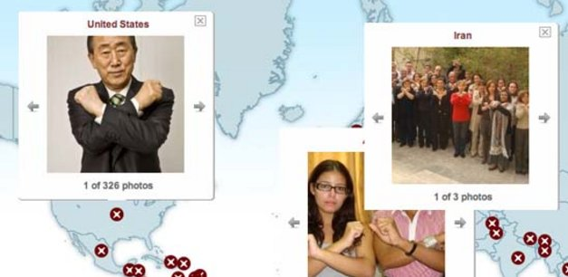

|
|
خشونت جنسی به مثابه یک حربه نظامی / نادر رودگری
دو شنبه10 مرداد 1390

تجاوز به زنان و خشونتهای جنسی، پدیده تازهای نیست و در همه جوامع سنتی و مدرن، رواج دارد اما در سالهای اخیر تجاوز به زنان، مردان و کودکان در زمان جنگ یا شورشهای ضد دولتی، به عنوان یک حربه جنگی یا سیاسی علیه نیروهای مخالف دولت به کار گرفته شده است.
در جوامع خودکامه که دارای حکومتی مستبد و غیر پاسخگو هستند، تجاوز و خشونت جنسی، عملی است که عموما به وسیله نیروهای نظامی مسلح وابسته به قدرت حاکم که از مصونیت دولتی برخوردارند، انجام میگیرد.
تجاوز جنسی، جنایتی جنگی
به اعتقاد شورای امنیت سازمان ملل، خشونت جنسی در وضعیت جنگ یا شورشهای ضد دولتی، یک مسئله سیاسی و امنیتی است و باید به عنوان یک جنایت جنگی و اقدام علیه حقوق بشر به آن نگاه کرد، چرا که به اعتقاد این شورا، دولتها، گروههای مسلح و احزاب سیاسی از تجاوز برای تحکیم قدرتهایشان استفاده کرده و میکنند و باید جلوی این عمل به ویژه در زمان انتخابات سیاسی گرفته شود.
سازمان ملل با ایجاد تیمهای پلیس غیرنظامی در کشورهایی مثل سیرا لئون، کوزوو و لیبریا، به حمایت از خانوادهها و قربانیان تجاوز و خشونت جنسی برآمده است، چرا که قربانیان این نوع جنیاتهای ضد انسانی، نیازمند مراقبتهای جسمی و روحی و درمانهای ویژه پزشکیاند تا بتوانند خاطره تلخ و دردناک تجاوز و خشونت جنسی را از یاد ببرند.
به اعتقاد سازمان ملل، مصونیت سربازان و نظامیان از مجازات هنوز مهمترین دلیل وقوع تجاوزهای گسترده در زمان جنگ است که باید از بین برود.
سازمان ملل متحد با راه اندازی بخشی به نام یو ان اکشن (UN Action) و «تجاوز را فورا متوقف کنید» (Stop the rape now)، به مبارزه گستردهای با خشونت و تجاوز جنسی در جهان دست زده است.
برنامه «تجاوز را فورا متوقف کنید» یکی از برنامههای سازمان ملل است که توسط تیمهای این سازمان و نیروهای حافظ صلح در مناطق جنگی و جاهای دیگر عمل میکند.
سازمانهای زیر نظر سازمان ملل مثل یونیسف، کمیساریای حقوق بشر، کمیساریای پناهندگان و سازمان بهداشت جهانی نیز با این برنامه سازمان ملل همکاری دارند.
شورای امنیت سازمان ملل در قطعنامه ۱۸۲۰خود که در ژوئن ۲۰۰۸ صادر شد، خشونت جنسی را اقدامی علیه صلح و امنیت جهانی معرفی کرده است. این شورا همچنین با صدور قطعنامه ۱۸۸۸ در سپتامبر ۲۰۰۹، موضوع مصونیت از مجازات عاملان تجاوز و خشونت جنسی را مطرح کرده و با تعیین تیم ویژهای از متخصصان از آنها خواست که در تاسیس نهادهای قانونی برای جلوگیری از تجاوز و خشونت جنسی به دولتها کمک کنند.
قطعنامه شماره ۱۹۶۰ شورای امنیت نیز که در دسامبر ۲۰۱۰ صادر شده، مسئله پاسخگو بودن قدرتها در مقابل تجاوزها و خشونتهای جنسی را محور قرار داده است. در این بیانیه آمده که شورای امنیت سازمان ملل، خشونت جنسی علیه انسان فارغ از جنسیت، سن یا وابستگیهای آنها را تحمل نمیکند و دولتهایی که مرتکب این نوع جنایتها شوند، مورد تحریم قرار میگیرند. این بیانیه همچنین از نیروهای نظامی مسلح خواست تعهد دهند که از این گونه جنایتها جلوگیری کرده و عاملان آنها را مجازات کنند.
به گفته مارگوت والستروم، رئیس شورای حقوق بشر سازمان ملل، این شورا با مکانیسمهایی که در اختیار دارد و راههای پیشنهادیاش، در طی سالها درهای بازی بوده است برای همه زنانی که در زمان جنگ یا بعد از جنگ، قربانی خشونت جنسی و تجاوز بودهاند. تلاش این شورا این است که جلوی خشونت جنسی و تجاوز سازمان یافته در سرتاسر جهان را بگیرد. به گفته خانم والستروم، این معمولا زنها و کودکاناند که قربانی تجاوز و خشونت جنسیاند اما موارد زیادی بوده که مردان نیز هدف حملات جنسی واقع شدهاند.
بر اساس گزارش شورای حقوق بشر، روند اجرای عدالت در مورد عاملان تجاوزها، بسیار کند بوده است.
به گزارش سازمان ملل از میان ۲۰ تا ۵۰ هزار مورد تجاوز در بوسنی هرزگوین، تنها ۱۲ نفر از عاملان این تجاوزها در دادگاههای ملی محکوم و مجازات شدهاند.
بر اساس این گزارش، در گذشته قربانیان تجاوزها و خشونتهای جنسی نیروهای دولتی و نظامی از ترس این عوامل، جنایت آنها را پنهان میکردند اما اکنون آنها بدون ترس و شرم از این جنایتها حرف میزنند و عاملان آنها را رسوا کردهاند.
خشونت جنسی سیستماتیک در جهان
به گزارش سازمان ملل، عموما در جریان جنگهای داخلی از تجاوز سیستماتیک به عنوان یک حربه برای نابود کردن جوامع دیگر استفاده شده است.
در هفتههای گذشته، همزمان با شدت گرفتن جنگ داخلی در لیبی، هزاران تن از زنان و دختران لیبیایی قربانی تجاوز و خشونت جنسی سربازان سرهنگ معمر قذافی دیکتاتور لیبی شدهاند.
قذافی نمونهای از رهبران سیاسی است که از تجاوز جنسی به عنوان یک حربه نظامی علیه نیروهای مخالف خود استفاده کرده است.
معمر قذافی، اخیرا اعلام کرد که سربازان و فداییان او مجهز به قرصهای وایاگرا هستند تا به زنان بالای ۱۲ سال برای تحقیر مردان مخالف او تجاوز کنند.
در کنیا و کنگو، سربازان دولتی بدون ترس به زنان و دختران تجاوز میکنند چرا که میدانند دولت پشتیبان آنهاست و مجازاتی برای آنها درکار نیست.
به گزارش اسوشیتدپرس، جمهوری خلق کنگو بدترین جای دنیا برای زنان است. در این کشور هر روز ۱۱۵۲ زن مورد تجاوز قرار میگیرند یعنی در هر ساعت ۴۸ زن.
کشوری با هفتاد میلیون جمعیت که سالها قربانی استعمار، جنگهای داخلی و دیکتاتوری و فساد سیاسی بوده است. بر اساس آمار نشریه آمریکایی بهداشت عمومی (American Journal of Public Health) در فاصله بین سال ۲۰۰۶ تا ۲۰۰۷ (یعنی در طی ۱۲ ماه) بیش از ۴۰۰ هزار زن در کنگو مورد تجاوز قرار گرفتند.
به گزارش سازمان ملل، هنوز قربانیان زن در بوسنی هرزگوین، به دنبال مجازات نظامیانیاند که ۱۵ سال قبل در جریان جنگهای خونین داخلی این کشور به آنها تجاوز کرده اما از چنگ عدالت گریختهاند.
در جریان جنگهای داخلی بوسنی هرزگوین در منطقه بالکان در اوایل دهه نود، بین ۲۰ تا ۵۰ هزار زن مورد تجاوز واقع شدند. بین ۵۰ تا ۶۴ هزار زن در سیرالئون، قربانی تجاوزهای نظامیان مسلح بودند.
در جریان جنگهای داخلی در رواندا در سال ۱۹۹۴ صدها هزارتن از زنان این کشور به وسیله سربازان دولتی مورد تجاوز قرار گرفتند.
خشونت جنسی به شکل وسیعی در کشورهای دیکتاتوری نادیده گرفته میشود و علت آن به خاطر ناکارآمدی سیستم قضایی در این کشورهاست.
جنگ و خشونت جنسی
جنگها فضای مناسبی را برای خشونتها و آزارهای جنسی فراهم میکنند. در زمان جنگ، نظامیان و گروههای مسلح از تجاوز جنسی به عنوان یک تاکتیک جنگی و نظامی برای تحقیر افراد، از هم پاشیدن خانوادهها و نابود کردن جوامع استفاده میکنند.
جنگ، خشونت جنسی و تجاوز به زنان را توجیه کرده و سربازان فاتح به زنان و دختران طرف مغلوب به عنوان غنایم جنگی نگاه میکنند و خود را مجاز به دست درازی به آنها میدانند. قانون نظامیان و جنگجویان، برای سربازان متجاوز، مصونیت قائل شده و آنها را سرزنش و مجازات نمیکند.
در حالی که در زمان جنگها و شورشها، اغلب زنان و دختران قربانی خشونتها و تحاوزهای جنسی واقع میشوند، اما نظامیان برای تحقیر نیروهای مقابل، به مردان و پسران آنها نیز تجاوز میکنند.
به اعتقاد سازمان ملل، تجاوز به زنان و کودکان در زمان جنگ، یک جنایت جنگی، نسل کشی و جنایت علیه بشریت محسوب میشود و باید مرتکبان این جنایتها به مجازات برسند.
به گفته مارگوت والستروم، رئیس شورای حقوق بشر سازمان ملل و نماینده ویژه دبیرکل سازمان ملل در حوزه خشونت جنسی، «اکنون خشونت جنسی به عنوان یک تاکتیک جنگی گروههای مسلح درآمده چرا که بسیار مخربتر، ارزانتر و سادهتر از شیوههای دیگر جنگی است».